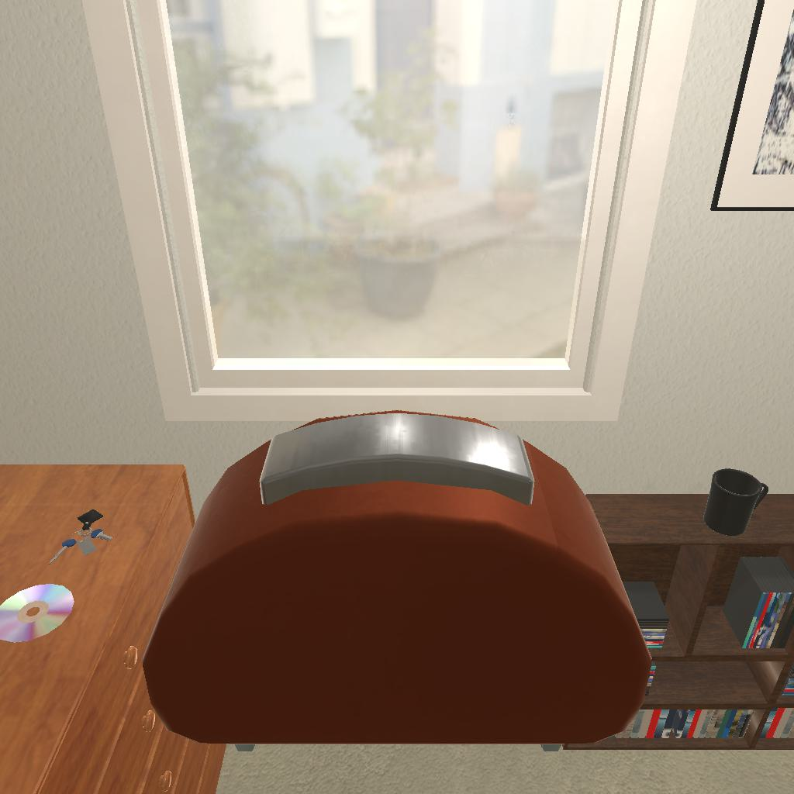

---------------------------------------------------------task: 1---------------------------------------------------------
--------------------------------------------------------------------------------------------------------------------------------------------------------------------
--------------------------------------------------------------------------------------------------------------------------------------------------------------------
Step:--------------------------------------------------------------------------5-------------------------------------------------------------------------------
----------------------------------------
VLM Prompt:
Image1:
Image2:
Image3:
**Instruction**
1. Analyze the provided images to identify all visible household objects and compare the difference between images (e.h. whether the object is opened or not and taken on hand or not), focusing on those relevant to the task description "examine the alarmclock with the desklamp."
2. Use the analysis of images and the task hint "The agent must find an object of the desired type, locate and turn on a light source with the desired object in-hand." to answer the question: what is the most reasonable action in the choices for the task description "examine the alarmclock with the desklamp"?
3. Decide and write the answer using the template: The answer is: (i): , where i is the real number. If there is no desired object in images, search every place based on **Initial Observation** to find the object. And if no one is exactly correct, choose a similar answer.
**Initial Observation**
You are in the middle of a room. Looking quickly around you, you can see bed (1), dresser (1), drawer (1-10), garbagecan (1), shelf (1-7)
**Answer Choices**
(1): go to bed 1
(2): go to dresser 1
(3): go to drawer 1
(4): go to drawer 2
(5): go to drawer 3
(6): go to drawer 4
(7): go to drawer 5
(8): go to garbagecan 1
(9): go to drawer 6
(10): go to drawer 7
(11): go to drawer 8
(12): go to drawer 9
(13): go to drawer 10
(14): go to shelf 1
(15): go to shelf 4
(16): go to shelf 5
(17): go to shelf 6
(18): go to shelf 7
(19): put alarmclock 1 in/on shelf 3
(20): examine alarmclock 1
(21): examine shelf 3
**Answer**
Let's think step by step by following the instructions.
----------------------------------------
----------------------------------------
Original Response:
Firstly, we need to identify all visible household objects in the provided images. In all three images, we can see an alarm clock on what appears to be a desk or a dresser. There is no visible desklamp in any of the images. However, we can see a window with daylight coming in, which might be irrelevant as we are specifically asked to use a desklamp.
Next, we need to compare the differences between the images. There seems to be no significant difference between Image2 and Image3; both show the alarm clock on the dresser with some other objects like a cup, a CD, and some small figurines. Image1 is taken from a slightly different angle and doesn't show the other objects on the dresser, but the alarm clock is still there.
Now, using the analysis and the task hint, we need to determine the most reasonable action for the task description "examine the alarmclock with the desklamp." Since we cannot see a desklamp in the images, we would need to search the room to find one. The task hint suggests that we need to find a light source and turn it on with the desired object in-hand, which in this case is the alarm clock.
Since the images do not show any light source and based on the initial observation, no desklamp is mentioned, we can assume that the desklamp might be located in one of the unsearched places, such as the drawers or the shelves.
Therefore, the most reasonable action to take would be to search the drawers or the shelves where a desklamp might be located. Among the given options, none specifically mention searching for a desklamp, but since shelves are more likely to have such objects, we should choose one of the "go to shelf" options.
The answer is: (14): go to shelf 1
----------------------------------------
----------------------------------------
>>> Refine Original VLM Response and Get Pure Action: go to shelf 1
----------------------------------------
-----------------------------------------------------------------
Running time: 15.982396364212036 seconds
Total Money: 0.5957699999999999
-----------------------------------------------------------------
-----------------------------------------------------------------
Text Observation:You arrive at loc 13. On the shelf 1, you see a mug 1.
-----------------------------------------------------------------
UNSUCCEED